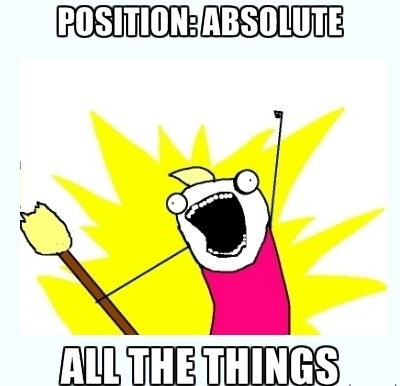

Pozycjonowanie
Pozycjonowania używamy do tego aby zmienić pozycję danego elementu na stronie. Przykładowe możliwości to:
- statyczne (static) - jest to ustawienie domyśle, obrazek zajmuje całą możliwą szerokość i wysokość. Elementy układają się jeden pod drugim na stronie. Przykład jest to pierwszy pod tekstem obrazek na stronie.
- względne (relative) - po elemencie pozostaje wolna przestrzeń jeśli go przesuniemy w którąś stronę, lecz jest pozycjonowany względem lewego górnego rogu. Przykład to drugi obrazek, który wychodzi o 100px w prawą stronę.
- bezwzględne (absolute) - po tym elemencie nie pozostaje wolna przestrzeń, pozycjonujemy względem lewego górnego okna przeglądarki. Przykład to obrazek znajdujący się pod Newsletter.
- stały (fixed) - elementy, zachowują stałą pozycję pomimo scrollowania strony, często wykorzystuje się to w przypadku menu, które zawsze znajduję się na górzę strony.Pozycjonujemy względem lewego górnego okna przeglądarki. Przykład to kawałek zdjęcia znajdujący się po prawej stronie.
Po oddaleniu strony widać, że elementy absolute i fixed zostają w konkretnym miejscu.